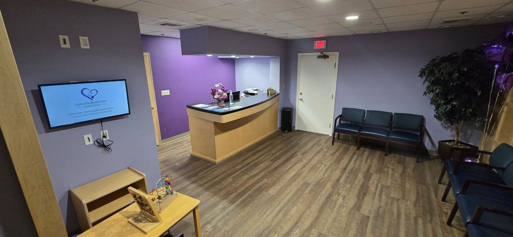

Exceptional Pediatric Care for Greater Hartford Families
A warm, welcoming, independent pediatric practice dedicated to the health and happiness of your children, from newborns through young adults. Opening before the end of 2026.


A Practice Built Around Your Child’s Best Health
Greater Hartford Pediatrics is an independent pediatric practice committed to compassionate, culturally sensitive, whole-child care. Every child deserves personal attention and a physician who truly knows them and their family.
Our mission is to give every child in the Greater Hartford community the healthiest possible start, meeting families where they are.
- Board-certified pediatrician with more than 18 years of experience
- Caring for newborns through young adults (0–21 years)
- Same-day and next-day sick visit appointments
- Telehealth visits available
- Most major insurance plans accepted, including HUSKY/Medicaid
A Space Made for Kids and Families
From the play table in our waiting room to our care team’s station, every corner of our office was set up to help children feel at ease.

Comprehensive Pediatric Services
Everything your child needs, from their very first well visit through the teen and young adult years, in one caring practice.
Well-Child Visits
Regular check-ups with growth monitoring, developmental screening, and preventive guidance at every stage.
Sick Visits
Same-day and next-day appointments for illness, infections, minor injuries, and urgent concerns.
Immunizations
The full recommended vaccine schedule and seasonal flu shots to keep your child protected.
Newborn Care
Early newborn visits, feeding and breastfeeding support, and guidance for new families.
Developmental Screenings
Early identification of developmental delays, autism concerns, learning differences, and behavioral needs.
Asthma Care
Personalized asthma action plans, inhaler teaching, trigger counseling, and coordination with school nurses.
Healthy Weight & Nutrition
Supportive, family-based care for healthy growth, nutrition, and physical activity.
Behavioral & Mental Health
Screening and care for ADHD, anxiety, and depression, with connections to counseling when needed.
Adolescent Medicine
Confidential, respectful care for teens and young adults, including support for the transition to adult care.
Sports & School Physicals
School, camp, and sports clearance physicals to keep your child active and ready.
Telehealth Visits
Video appointments for follow-ups, medication checks, and non-urgent questions.
Specialist Coordination
Referrals to and follow-up with Connecticut Children’s specialists when your child needs extra care.
Patient Portal
Message our office, request appointments, and view your child’s health information securely online.
Join Our Practice Family
Pre-register your family today to receive priority scheduling when our doors open.